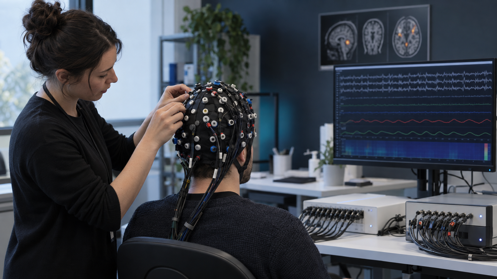
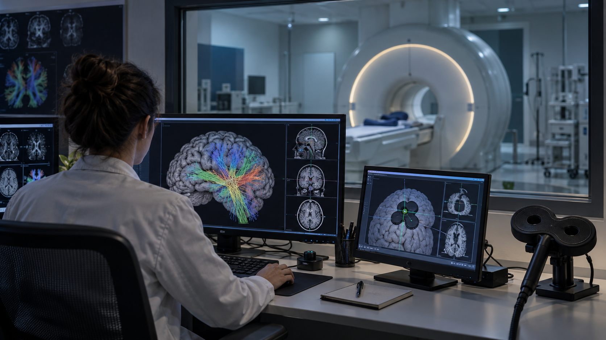
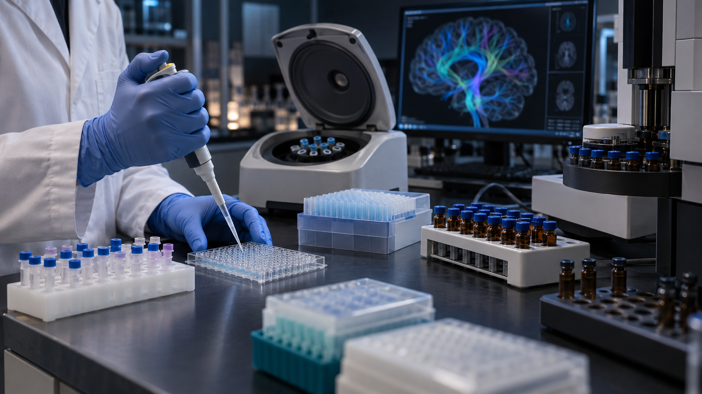

B.M. Clinical Medicine
Nanchang University, 2017–2022. Training across psychiatry, neurology, internal medicine, medical statistics and evidence-based medicine.
Clinically trained and systems-minded, I build multimodal studies that connect psychiatric assessment, brain and physiological signals, and deployment-aware AI — from protocol design and IRB coordination to synchronized acquisition and longitudinal analysis.
A medical background anchors my research in patient-relevant questions; systems design and quantitative methods turn those questions into reproducible data.
Nanchang University, 2017–2022. Training across psychiatry, neurology, internal medicine, medical statistics and evidence-based medicine.
CogDrive Lab, State Key Laboratory of Intelligent Green Vehicle and Mobility; adolescent depression screening and multimodal clinical AI.
Managed 15–20 chronic-disease inpatients and completed 12 hospital rotations, including Neurology ICU and Cardiology ICU.
Full-time research in addiction medicine, spanning prospective cohorts, multimodal MRI/DTI, EEG, microbiome and metabolomics.
Current affiliations: Tsinghua University CogDrive Lab · Clinical collaboration with Tongji Hospital, HUST · Previous training with Tsinghua Yan Lab and Beijing Normal University Liu Lab.
My work has moved from understanding patient behavior to measuring dynamic neural states, testing intervention, and designing systems that can translate multimodal state information into useful action.
Patient-facing training raised the question of how symptoms, cognition and context shape a person’s ability to act toward long-term goals.
Multimodal AUD and methamphetamine cohorts linked clinical variation with brain circuits, behavior and gut–brain measures.
Depression fMRI/rTMS and MRI-guided GPi TUS extended my work from observing brain networks to studying interventions.
Adolescent depression assessment, BPlus experiment software and health-cockpit design connect dynamic human state with safe, context-aware interaction.
A prospective clinical study combines age-adaptive psychiatric assessment with synchronized 64-channel EEG–fNIRS acquisition to investigate neurovascular coupling, alongside behavioral and physiological measures. Its intended translational destination is an intelligent health cockpit: study findings and validated multimodal models are being developed toward in-vehicle health interaction and screening, subject to research validation and product integration.
Three photographic reconstructions show the core experimental systems: synchronized neurophysiology, image-guided circuit research, and cross-scale gut–brain measurement.

High-density electrical and hemodynamic recording with synchronized behavioral and physiological signals.

Structural pathways, functional dynamics and individualized target localization.

From biospecimen processing to cross-modal integration with circuit-level measures.
Images are original photographic reconstructions created for this portfolio. They represent the experimental workflows and do not depict actual participants or identifiable clinical records.
Research training across Tsinghua University’s Yan Lab and Beijing Normal University’s Liu Lab connected clinical phenotyping, task and resting-state fMRI, longitudinal monitoring, and image-guided neuromodulation.
Research Intern · Advisor: Prof. Chaogan Yan · Multi-phase support from NSFC, National Key R&D Program, STI2030 Brain Science, and CAS
Visiting Research Intern · Advisor: Dr. Zheyun Liu
These projects combine cohort design, neuroimaging, neuromodulation and molecular measurement. Findings are presented as preliminary or associative unless formally established.
GUT MICROBIOTA · METABOLITES · CIRCUITS
Built an integrated database linking 16S rRNA microbiome profiles, GC–MS short-chain fatty acids, DTI white-matter metrics and fMRI. Exploratory analyses identified three microbiota markers associated with SCFA levels and supported a working pathway connecting gut inflammation, metabolic dysregulation, white-matter integrity and craving.
INTERVENTION · WHITE-MATTER PLASTICITY
Coordinated multimodal imaging for 160 participants and examined longitudinal FA change in the corpus callosum and superior longitudinal fasciculus. Preliminary analyses suggested a potential restorative trend and motivated further longitudinal validation.
METHAMPHETAMINE · FRONTOTEMPORAL CIRCUITS
Collected MRI and EEG data from 10 MA patients and maintained an 80-case database. DTI and SC–FC coupling analyses focused on PFC–hippocampal pathways, with diffusion abnormalities observed in the cingulum and fornix.
EXECUTIVE CONTROL · RELAPSE
Combined PFC–VS structural connectivity with task-fMRI measures in 20 deeply phenotyped participants. Developed a logistic-regression relapse model and explored how individual structural connectivity may inform neuromodulation targeting.
CLINICAL TRANSLATION · DATA INTEGRATION
Unified resting/task fMRI, DTI FA/ADC, EEG, behavioral, microbiome and metabolomic data to characterize addiction-related white-matter and prefrontal–striatal abnormalities and generate testable, connectivity-informed intervention hypotheses.
Multimodal work is most useful when every signal answers part of the same clinical hypothesis.
MINI, K-SADS-PL, CDRS-R, HAMD/HAMA/MADRS, IRB coordination, pediatric safeguards and longitudinal retention.
EEG, fNIRS, ECG/PPG, GSR, respiration, eye tracking, behavioral signals and multimodal synchronization.
Resting/task fMRI, DTI tractography, FA/ADC, SC–FC coupling, FSL, DPABI/DPABISurf and quality control.
rTMS, TUS, MRI-based neuronavigation, parameter logging, cognitive testing and safety monitoring.
Age-adaptive dialogue design, MLLM I/O specifications, multimodal schemas, RAG and edge–cloud inference alignment.
Python, R, SPSS, longitudinal modeling, logistic regression, brain–behavior coupling and predictive validation.
16S rRNA microbiome sequencing, GC–MS SCFA metabolomics, biospecimen SOPs and cross-scale integration.
Protocol design, acquisition deployment, timestamp architecture, data dictionaries, multicenter harmonization and reproducible QA.
I want to take responsibility for the full life cycle of a clinically meaningful scientific question.
I began in research as an implementer—recruiting and assessing participants, collecting data, and learning directly from patients within studies designed by others. Over time, I moved closer to the full research process: identifying questions, designing experiments, building acquisition environments, standardizing protocols, coordinating collaborators, training research staff, anticipating operational risks, and planning the preprocessing and analysis of multimodal data.
Leading a study from its initial question to an operational research system showed me both how much I have learned and how much deeper I want to go. The questions I now care about require more than completing a cross-sectional experiment; they require rigorous methodological development, longitudinal follow-up, and several years of sustained scientific work. I want to pursue a PhD to develop the independence and depth needed to take responsibility for that entire arc—from a clinically meaningful question to reproducible evidence and, ultimately, useful knowledge.
My goal is not simply to participate in research, but to grow into a researcher capable of defining and sustaining an original program of inquiry—and to contribute, in a focused and honest way, to clinical neuroscience.
My central question is how an intelligent system transforms internal state into behavior. In clinical addiction research, I saw that people may understand long-term consequences while craving, distress or withdrawal shifts which goals guide action. This led me to ask how changing network states shape the selection of information, goals and responses.
Multimodal MRI, EEG and behavioral research made that question measurable; rTMS and TUS introduced intervention; current adolescent depression and health-cockpit work asks how state information can support useful, safe interaction. I am interested in a general framework — Global State → Task-Relevant Latent State → Selection / Decoding → Action — as a research hypothesis connecting neural state decoding, BCI, closed-loop neurotechnology and, more broadly, artificial systems with world models. The biological–AI connection is an open direction to investigate, not an established equivalence.
I call this developing question an Intelligence-to-Action Interface: how can a high-dimensional internal state be translated into the representation or action that matters at a particular moment?